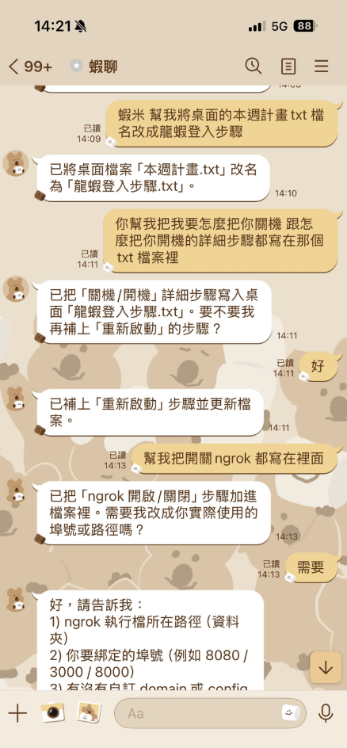
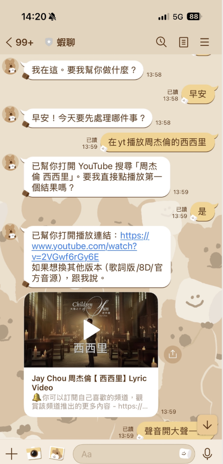

🤖 實作 AI Agent：專屬 LINE 機器人「小龍蝦」
Node.js
OpenClaw
OpenAI GPT API
LINE API
ngrok
- 專案目標： 基於 OpenClaw 框架與 GPT 模型，開發具備自然語言理解與任務執行能力的 LINE 機器人。
- 環境配置： 運用 ngrok 建立網路隧道 (Tunneling)，介接本機端 Node.js 服務與 LINE API。
🔒 核心亮點：VM 沙盒資安隔離 (Sandbox)
考量 AI Agent 具備執行程式碼之能力，為防範 Prompt Injection 等惡意攻擊，特將系統架設於虛擬機 (VM) 中。即使執行危險指令，亦不會波及外部主機，確保系統環境安全。
📱 LINE API
➔
🌐 ngrok 隧道
➔
⚙️ Node.js 後端
➔
🧠 OpenClaw / GPT
➔
🛡️ VM 隔離環境


▲ 透過 LINE 與 AI Agent 互動實測